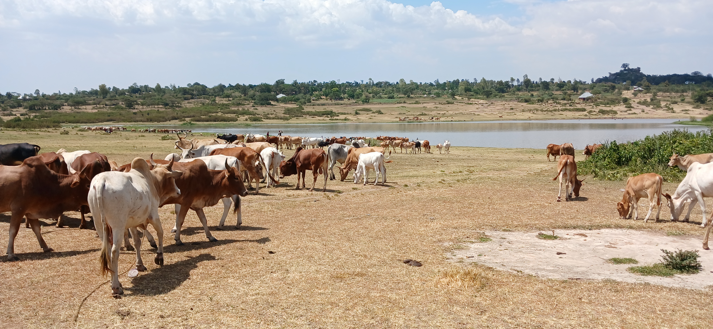
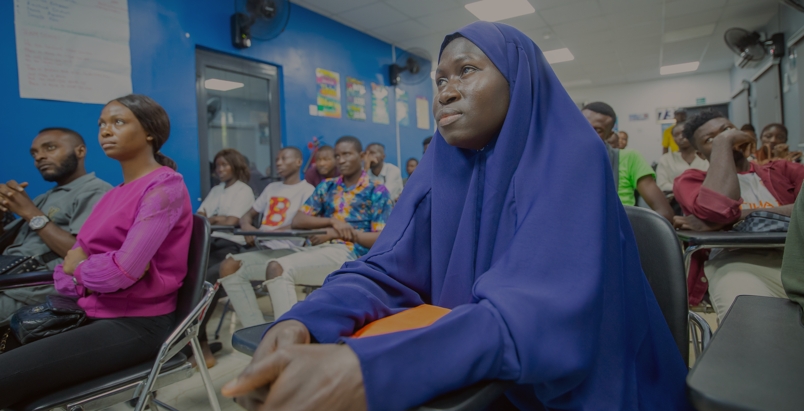

Active
DUPC3 Waterpans Project
A 5-year sustainable waterpans project (2023-2027) funded by the Dutch government, focused on water and health.
The project builds local capacities in Tanzania and Kenya through collaborative activities such as joint research,
education, and knowledge sharing, ensuring communities develop sustainable solutions to their water-related challenges.
2023 - 2027
Tanzania & Kenya
Water & Health
Support This Project

Active
Vocational Training & Skills Development
Skills are the foundation of economic independence. Our vocational training program teaches women and youth practical skills
in tailoring, agriculture, handicrafts, and small business management, enabling them to create sustainable livelihoods.
500+ Trained
200+ Businesses Started
Since 2015
Support Training
Sustainable Agriculture
Training and support for sustainable farming practices to improve food security and income for rural families.
Support
Health & Nutrition
Health education, nutrition programs, and support for vulnerable families and people living with HIV/AIDS.
Support
Community Development
Building local capacity, strengthening community groups, and promoting gender equality and social inclusion.
Support
Want to partner with us? Contact us